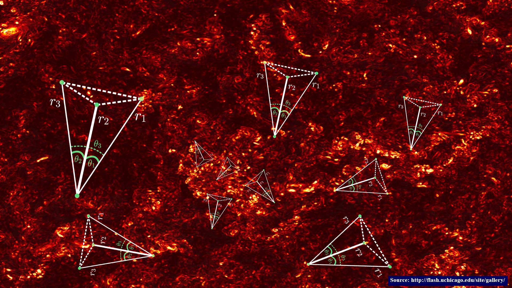

Fast Four Point Statistics of the Interstellar Medium
For my Summer REU program at the University of Florida I succesfully wrote an algorithm to measure the four point correlation function on discretized data with O(NlogN) complexity. This allgorithm allows us to probe deeper into the simulations of the turbulent interstellar medium to probe such things as parity arguments, isotropy, and non-gaussianity. The results are still pending but in the mean time here is a heuristic image of what my algorithm is doing:
If you are curious and in a rush, here is a link to my REU Presentation that was a blazing 10 minutes long: